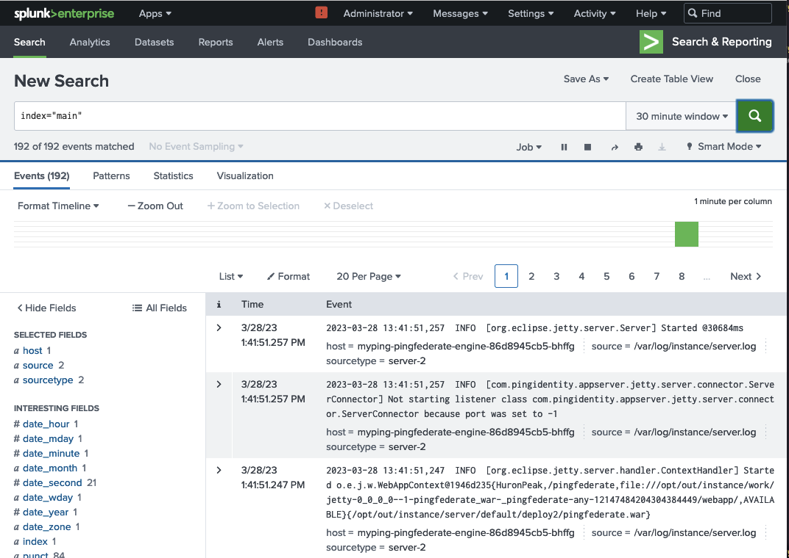
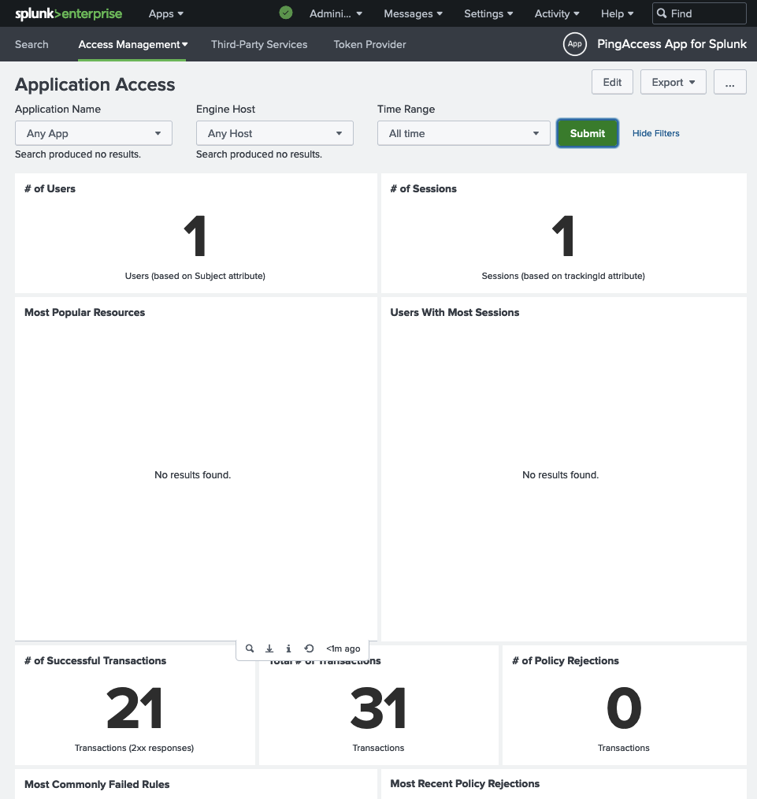

Forwarding PingFederate and PingAccess logs to Splunk
This page provides an example of how PingFederate and PingAccess logs can be shipped to Splunk. The principle of using a container for a single purpose is followed, and a sidecar for log collection and forwarding is placed in the appropriate Ping product pods.
Video demonstration
For a video demonstration of this process, visit this link.
Splunk Demonstration Only
This guide is for demonstration purposes only, but the principles will apply to a production implementation. In addition, the process for other logging solutions will be similar.
Components Used
- Ping DevOps Helm Chart
- Ping server-profiles repository
- Splunk Deployment
- Splunk Universal Forwarder Docker image
Prerequisites
- Access to a Kubernetes cluster. For this guide, a local Kubernetes cluster with the nginx-ingress controller and the MetalLB load balancer was used. You might have to adjust how you access the product interface URLs, depending on your environment.
- Helm pingidentity/ping-devops chart >= 0.9.11
Overall Process
- Configure the cluster environment
- Deploy Splunk Enterprise
- Configure Splunk and generate an HTTP Event Collector (HEC) token
- Create a configmap with the token for use by the Splunk Universal Forwarder (UF) sidecar
- Use Helm to deploy PingFederate and PingAccess with the sidecar attached to the engine pods
- Confirm logs and activity are visible in Splunk
Cluster preparation
# Create the namespace
kubectl create ns splunk
# Set the kubectl context to the namespace
kubectl config set-context --current --namespace=splunk
# Confirm
kubectl config view --minify | grep namespace:
Splunk Server deployment
Deploy the Splunk application:
# Clone the `pingidentity-devops-getting-started` repository to a local directory
git clone \
https://github.com/pingidentity/pingidentity-devops-getting-started.git
cd pingidentity-devops-getting-started
# Deploy Splunk
# The splunk.yaml file assumes a load balancer is available in the cluster
kubectl apply -f 20-kubernetes/splunk/splunk.yaml
# Determine IP address assigned
# 8000 is HTTP; 8088 is HTTPS
kubectl get svc
NAME TYPE CLUSTER-IP EXTERNAL-IP PORT(S)
splunk LoadBalancer 10.105.171.4 192.168.163.172 8000:30416/TCP,8088:30364/TCP,9997:31770/TCP,9990:32292/UDP
# Create corresponding entry in /etc/hosts
# If your cluster has publicly-accessible IPs and DNS support, this step is not necessary
# You would use the DNS entry assigned to the service.
192.168.163.172 splunk.pingdemo.example
Configure Splunk
In this section, you will prepare Splunk for the logs from the products.
Data Persistence
In this demo, there is no data persistence for Splunk. If you restart the Splunk pod, you will lose everything that is configured in the following steps.
- Navigate to the UI in a browser at
http://splunk.pingdemo.example:8000/en-US/account. - Login with the credentials admin / 2FederateM0re!
Create an index
- Navigate to Settings > Indexes and click the New Index button at the upper-right.
- Provide pinglogs as the Index Name.
- Accept all defaults and click Save.
Create an HTTP Event Collector (HEC)
- Navigate to Settings > Data inputs and click Add New in the
HTTP Event Collectorrow. - A wizard is launched and you are taken to the Select Source step. Type
pinglogsas the name and click the Next button in the upper panel. - In the Input Settings step, add the
pinglogsindex to the Selected item(s) box by clicking on it in the Available item(s) list, then click the Review button in the upper panel. - Confirm your entries and click the Submit button in the upper panel.
- A token is generated. Save this token to a scratch file or buffer for use in configuring Splunk in a moment.
Add the Ping product applications to Splunk
- Navigate to Apps > Find More Apps. The Apps link is at the upper-left of the UI.
- Filter the list of applications using
Ping. Add the PingFederate and PingAccess Apps for Splunk.
Splunk Account
You will need valid credentials from Splunk to install the applications. You can use a free trial if necessary.
PingDirectory App
While not shown in this example, Ping also provides a Splunk App for PingDirectory. You would need to attach the Splunk UF sidecar to your PingDirectory pods as done here for PingFederate and PingAccess.
Create a configmap
Use the HEC token generated earlier to update the file 20-kubernetes/splunk/splunk-config-init.yaml (search for #CHANGEME).
Apply the file:
kubectl apply -f 20-kubernetes/splunk/splunk-config-init.yaml
Deploy the Ping stack with Splunk UF as a sidecar
# Create the DevOps secret for temporary Ping license
pingctl k8s generate devops-secret | kubectl apply -f -
# Install Ping and Ingress
helm upgrade --install myping pingidentity/ping-devops -f 20-kubernetes/splunk/values.yaml -f 30-helm/ingress-demo.yaml
This command deploys PingDirectory, PingFederate, and PingAccess with:
- Baseline Server Profiles
- Splunk Logs Profile layer for the PingAccess and PingFederate engine pods
- Splunk UF sidecar for the PingAccess and PingFederate engine pods
Server Profile Repository
The values.yaml file in this guide is using a directory in the Ping server profiles repository. That profile folder has log4j configuration files that format the logs from the PingAccess and PingFederate product containers for use in Splunk. These files are also in the backing repository for this portal under the 20-kubernetes/splunk/pingaccess and 20-kubernetes/splunk/pingfederate directories, respectively.
Confirm in Splunk
Eventually you should see product logs in Splunk by searching: index="main". The first logs will appear when the PingFederate engine has launched fully.

To see the Splunk App dashboards in operation, generate some traffic in the products to populate them. For example, for PingAccess, you can access https://myping-pingaccess-engine.pingdemo.example/anything, which will be rejected, but you will see the activity populated. Also, you can login to the administrative console at http://myping-pingaccess-admin.pingdemo.example with the credentials administrator / 2FederateM0re.

References
This list includes some of the references used in the creation of this document: